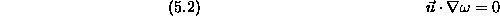
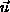
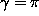
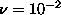
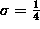
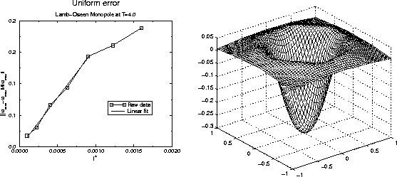
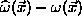
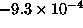

Though the Lamb-Oseen vortex (a Gaussian patch of vorticity) appears to be a trivial example for a vortex computation, the truth is the opposite. The first advantage for testing a method on this flow is that an exact analytic solution is available. Since vortex calculations have no built-in symmetries as would an azimuthal spectral method, the circular symmetry of the problem lends no advantage. In fact, since

for this flow, one would more accurately approximate the solution with immobile, nondeforming Gaussians. Better still, one large Gaussian basis function would constitute an exact solution! In solving the equations of motion for small moving basis functions, one is going to induce errors associated with the temporal integration. Also, for the higher order method, one will induce errors near the center of the Gaussian vortex caused by the high radius of curvature of the streamlines and therefore large variations in

andToward this end, the numerical simulation of the simple spreading Gaussian has the following characteristics. The vortex has circulation

and fluid has viscosity
to achieve a moderate Reynolds number of approximately 314. A moderate Reynolds number is used so that both convection and diffusion is important in the flow. The initial vortex ``width'' is
. The flow is simulated for time T=4.0 which is slightly longer than one turnover time.


(right). For larger values of l at 0.4 and 0.35, one can see that method performs better than predicted. This is attributable to the fact that relatively few refinements occur for such large values of l and correspondingly small values of
. Merger induced errors are set to be small so that they will not interfere with l dependence. Thus, the figure shows
ECCSVM approximated solutions to this flow
in a series of experiments with the parameters
shown in Table (5.1) and the results shown in
Fig. (5.2). Fig. (5.2) clearly
displays the  convergence properties of ECCSVM. Though a merging
algorithm is used to keep the problem size small, the merger-induced
error tolerances are
set so that they are small relative to the spatial errors being
measured.
convergence properties of ECCSVM. Though a merging
algorithm is used to keep the problem size small, the merger-induced
error tolerances are
set so that they are small relative to the spatial errors being
measured.